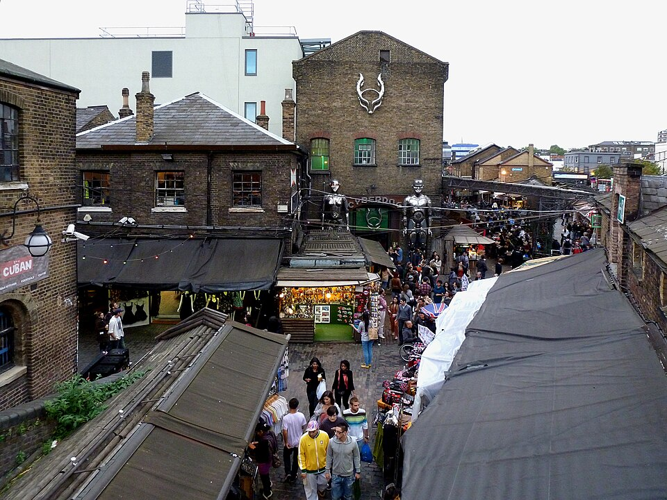

Read each original answer first. Choose the best repair, then explain what changed.
Original 1: Usually I take a bath when I have time to relax. Then I watch a movies in a bed.
A. I watch films in the bed.
Use either a movie (one) or movies (plural). The fixed phrase is in bed.
Original 2: I’d like learning German language and I would like becoming a designer of the interior.
B. I’d like …
would like + to + verb. Say learn German and use the job name an interior designer.
Lesson sentence: I went in the shop and saw a jeans.
C. Choose the most likely meaning.
to a shop = any shop / the listener does not know which one; to the shop = a particular shop that is clear from the situation; into a shop focuses on entering it. Jeans is plural: a pair of jeans.
Speak: Which correction is easiest to remember? Make one new sentence with would like to and one with a pair of.
Spaced retrieval · August, September and October reports
1 · Bring older language back
Use six phrases from different points in the course. There is one extra phrase. The bank stays visible; click a phrase after you use it.
1. I didn’t the market to be so crowded on a weekday.
Think something will probably happen.
2. The train from Moscow took nearly four hours.
The travel from one place to another, especially a longer one.
3. Camden Market is if you enjoy lively places and street food.
Good or interesting enough to spend time on.
4. Could you my cat while I’m away?
Take care of a person, animal or thing.
5. The plumber isn’t today, but he can come tomorrow morning.
Free and able to help.
6. We go to the coast on Sunday, but we haven’t decided yet.
A possibility, not a definite plan.
Use the extra phrase: Say one natural sentence about a decision or opinion.
Roadmap A2+ SB p.22 · Ex.3a · continuation
2 · Choose the precise adjective
Choose the adjective that matches all the details in the situation.
1. The night market is full of music, conversation and people. It feels
2. We picked up our rubbish, so the picnic area stayed
3. Almost every table was taken and people were waiting outside. The café was
4. There were no cars, shops or loud groups near the lake. It was very
Speak: Describe one place that is often crowded and one place that is usually peaceful. Why do people go there?
Roadmap A2+ SB p.22 · Ex.4a–b · original forum text
3 · Travel forum: market or beach?

Camden Market · LondonBarra da Tijuca · Rio de JaneiroPrainha · Rio de JaneiroGrumari · Rio de Janeiro
London forum
Simone: Hey! I’m in London for the weekend. Where are the best places to eat out?
Elisabeth: Camden Market! There are lots of choices, with food from all over the world, and it’s quite cheap. It’s a really lively area, with lots of exciting things to do. It’s an interesting area, too – there’s a mix of old and modern buildings.
Rebecca: Camden Market is great, but it can get very crowded. I’d recommend St Katharine’s Docks, a bit further away. It’s a lovely little area where you can relax and have a nice meal, and it’s not as noisy as Camden Market. I think it’s cheaper and quieter, too!
Rio forum
Barry: Hi everyone, my wife and I are going to Rio de Janeiro next month. Can you recommend which beaches to go to?
Pedro: Well, I just love Copacabana. It’s longer than the other beaches in the city, so there’s lots of space to play volleyball or just relax. It’s livelier than other beaches, too – you can have lots of fun there!
Patrizio: I’d recommend Grumari or Prainha – these two beaches are a few kilometres out of Rio. They’re cleaner than the city beaches, too, which are noisier and more crowded.
Bethany: I agree with Pedro. You should definitely visit Copacabana and other beaches in the city, but Prainha and Grumari are better. They’re less noisy and more beautiful, in my opinion.
1. Camden Market is a peaceful place.
Find what Rebecca says about the number of people.
2. Camden Market is a popular place.
Crowded places usually attract many visitors.
3. St Katharine’s Docks is near Camden Market.
Rebecca calls it “a bit further away”.
4. Copacabana beach is busy.
Pedro says it is livelier than other beaches.
5. Grumari and Prainha are outside the city.
Patrizio says they are a few kilometres out of Rio.
Personal language follow-up · report from 25 October
4 · Both or neither?
both
Use it when something is true for two people or things.
оба / обе
neither
Use it when something is not true for either of two people or things.
ни один из двух / ни тот ни другой
1. Prainha and Grumari are outside the centre. beaches are quieter than the city centre.
2. The two cafés were full, so had an available table.
3. Her jacket and trousers had creases, so she hung items on hangers before steaming them.
Speak: Compare two places you know. Make one sentence with both and one with neither.
You have one free afternoon. Choose Camden Market, St Katharine’s Docks, Copacabana, Prainha or Grumari. Explain your choice with three details.
I’d choose …It sounds …You can … there.I wouldn’t choose … because …
Follow-up questions: What would you do there first? Who would you go with? Which place near Moscow has a similar atmosphere? Would you visit at a busy time or choose a quieter time?
Optional reserve · Roadmap A2+ Vocabulary Bank 3A, p.138
6 · Places in a town
Use this only if there is time. Write the most suitable place for each plan.
You want to see paintings and learn about local history.
You need some medicine late in the evening.
You want fresh air without leaving the city.
You want to buy local food from several small sellers.
Speak: Which three places do you use most in your neighbourhood?
Roadmap A2+ SB p.23 · Grammar · comparatives
7 · Compare places clearly
comparative + than
Camden is noisier than St Katharine’s Docks. Prainha is more beautiful than many city beaches. The market is less peaceful than the docks.
(not) as + adjective + as
The docks are not as noisy as Camden Market. This beach is as popular as the one near our hotel.
Forms: quiet → quieter · lively → livelier · crowded → more crowded · beautiful → more beautiful · good → better
Find in the forum: underline two examples with than, one with less, and one with not as … as.
Speak: Which recommendation sounds better for you: Camden Market or St Katharine’s Docks? Give two comparisons.
Roadmap A2+ SB p.23 · Ex.7 · controlled practice
8 · Complete the comparison
1. The garden is (quiet) than the market.
2. Street food is nearly (cheap) as a supermarket lunch.
3. The riverside is (peaceful) than the main square.
4. This beach is (not / dirty) as it was last year.
5. The park is (big) than the garden.
Speak: Make one true comparison between two Moscow neighbourhoods and one between two holiday places.